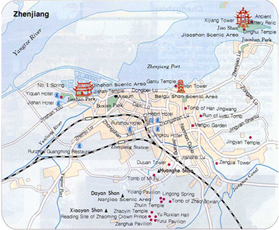

According to the Chinese Medicine Dictionary: “Vinegar produced in Hangzhou and Shaoxing counties is brilliant, but vinegar in Zhenjiang is the best.” The spring up of the vinegar industry and the blossoming of vinegar culture in Zhenjiang arise from the favorable climatic and geographical conditions richly endowed by nature.
Located in the southeastern part of China, Zhenjiang is run through by the Beijing-Hangzhou Grand Canal and is only 305km from the mouth of Yangtze River in the east, which is the intersection of rivers. By the end of the Qing Dynasty, Zhenjiang vinegar radiated to all areas in China through waterway transport, increasing the popularity of the Zhenjiang vinegar industry.
In addition to convenient transportation, Zhenjiang also enjoys unique natural water resources. The sedimentary rocks, marble, and granite compose the hills in Zhenjiang, and thus water collected through the penetration of rocks is rich in minerals and favorable to the brewing of unique Zhenjiang Vinegar flavor. Meanwhile, affected by the subtropical monsoon climate, Zhenjiang is in the humid zone with abundant average precipitation of 1222.3 mm. Such a humid environment provides the ideal condition for rice growing. The locally produced sticky rice, raw materials of Zhenjiang Vinegar, has strong glutinousness, high branched-chain starch content, and less miscellaneous flavor after fermentation. Therefore, the finished product of Zhenjiang vinegar has excellent quality and thick rich taste.